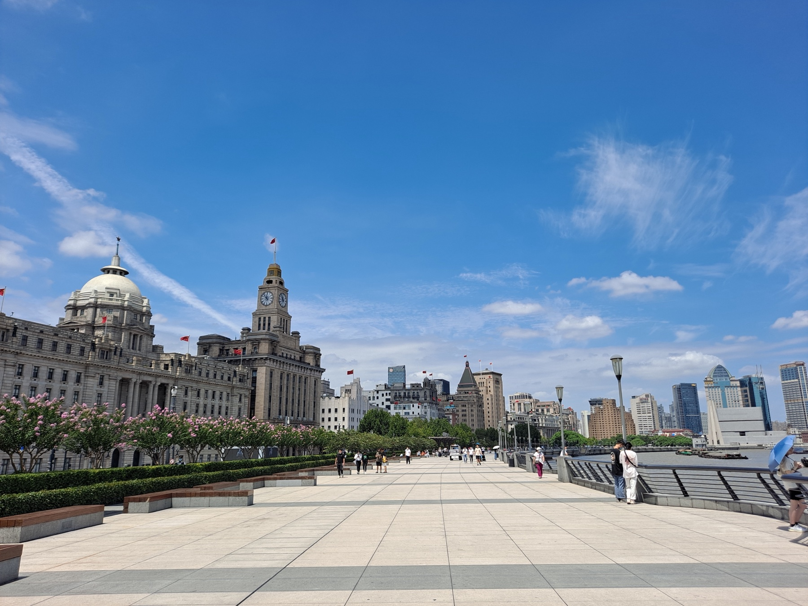

Shanghai29.03 tot 24.04mainland China · daarna Hongkong
Bewaren op dit apparaat lukt niet. Je kunt de planning gebruiken, maar
wijzigingen blijven niet bewaard na het sluiten. Maak een back-up via de
knop onderaan.
Ons reisboek · dag voor dag
Elke dag een nieuw verhaal.
Eén hoofdavontuur, tijd om te slapen en ruimte om van plan te
veranderen.
☀
Het plan is de basis. Jullie energie bepaalt het tempo.
Tijden in de dagprogramma’s zijn suggesties in lokale tijd. Alleen
de opgegeven vluchttijden zijn vaste reisuitgangspunten; treinen,
hotels en attracties zijn nog te bevestigen.
Even wegdromen
Dit wacht op ons.
Drie korte voorproefjes van onderweg.
Van oost naar noord, van bergen naar zee
Eén lijn door een ander China.
Elf bases, negen grote treinritten en twee transfers door het
landschap.
HSR is de ruggengraat. De lijn op de kaart verbindt onze bases;
hij toont geen exacte spoorligging.
27kalenderdagen op mainland China, inclusief aankomst en
vertrek
Vier nachten Wulingyuan. Vier nachten Yangshuo. Twee nachten
tussen de rijstterrassen. Zo heeft ook het weer een plek in het
plan.
Kaart geladen via OpenStreetMap. Elke stop opent de bijbehorende
dag.
De kaart kon niet laden. De volledige route staat hieronder.
Onze prioriteiten
De grote iconen. En het China ertussen.
De route bevat de grote ervaringen: de Bund, West Lake, de Verboden
Stad en Muur, het Terracottaleger, panda’s, Avatarbergen, het
karstlandschap en Hongkong. Korte lokale momenten geven de reis meer
afwisseling zonder extra hotelwissels.
Shanghai, Beijing & Chengdu: Wukang / Anfu op
D4, Shichahai-hutongs op
D10 en Heming-theehuis op
D15. Summer Palace of Leshan vervangt het
rustige hoofdprogramma; we stapelen ze niet.
Zhangjiajie: eerst twee goede parkdagen, daarna
eventueel Tianmen. De glazen brug is tweede keuze.
D20 blijft kort als de volgende trein een
vroege start vraagt.
De kritische treindag: bij de 2026-referentie van
07:12 op D21 vertrekken we zeer vroeg uit
Wulingyuan. Liever een geschikte latere directe dienst als die in
2027 rijdt; bij overstap bij voorkeur hetzelfde station.
Eén nacht Kanton: op
23 april naar Guangzhou. Op
24 april dim sum en Shamian, daarna de trein
naar Hongkong. Daar blijven twee nachten; Star Ferry en de Peak
staan op 25 april.
Een echte bonus: Ngong Ping / Grote Boeddha op
D29, alleen bij goed weer en voldoende
energie, in plaats van het hele Island/Peak-programma. Longji
blijft twee nachten; de actuele staat van de velden en
weersverwachting bepalen of we het rustige Yangshuo-alternatief
nodig hebben.
De elf bases en 28 nachten blijven het uitgangspunt. Suzhou,
Huangshan, Fenghuang en Yunnan bewaren we voor een andere route:
deze reis heeft al veel verplaatsingen. De prioriteiten zijn onze
afweging voor reizen met Amélie.

Het begint met de Bund.En onderweg vinden we dit.
Heen · SWISS
28 maart · 09:50 AMS
Amsterdam → Zürich → Shanghai
Aankomst 29 maart · 06:30 PVG Totale
reisduur circa 14u40 · één nacht in het vliegtuig
Terug · Cathay Pacific + Lufthansa
26 april · 23:55 HKG
Hongkong → Frankfurt → Amsterdam
Aankomst 27 april · 10:35 AMS Totale
reisduur circa 16u40 · één nacht in het vliegtuig
Vluchttijden volgens jullie definitieve reisbasis. Vluchtnummers,
tussenliggende tijden, boekingsstatus en uitvoerende maatschappijen
per segment nog vastleggen.
28 nachten · elf keer thuiskomen
Fijne plekken om te landen.
Per stop Budget, Comfort en ruimte voor jullie eigen hotel. Kies
jullie mix; planning en totaalbudget volgen automatisch.
Budgetten, geen live hoteloffertes. De bedragen
hieronder zijn onze ramingen in euro per kamer per nacht voor twee
volwassenen + baby. Beschikbaarheid, babybed, ontbijt, toeslagen en
annuleerbaarheid voor maart/april 2027 moeten nog worden bevestigd.
Open de datumzoeklink voor jullie exacte verblijf.
Eigen hotels voeg je hieronder per locatie toe. Ze worden op dit
apparaat bewaard en gaan mee met ‘Back-up downloaden’. Met ‘Back-up
openen’ neem je ze mee naar een ander apparaat.
Stuur dit mee bij elke hotelboeking
Een goede kamer begint met vier vragen.
“We reizen met twee volwassenen en een baby van circa 11 maanden.
Kunt u een babybed en een rustige rookvrije kamer bevestigen? Is het
totale bedrag inclusief belastingen, ontbijt en babytoeslagen? Welke
annuleringsvoorwaarden gelden? Kunt u onze transfer met een passend
kinderzitje regelen?”
Shanghai: vroege kamer. Ping’an: portier en trappen. Hongkong:
bagageopslag, late checkout of dagkamer op 26 april.
Van voorpret naar geregeld
De boekingskalender.
Dit zijn de momenten waarop het plan een ticket wordt.
Nu voorbereiden
Eigen stoel voor Amélie.
Vraag SWISS, Cathay én Lufthansa vooraf akkoord voor hetzelfde
zitje op alle vier vluchtsegmenten. Een vliegtuigkeur alleen is
geen gezamenlijke acceptatie.
Kanton staat terug met één nacht: 23–24 april. Controleer een
eventuele eerdere directe Guilin–Hongkong-boeking en pas het
Hongkong-hotel aan naar 24–26 april. De twee nieuwe treinritten
krijgen een eigen status.
Negen ritten. Negen openingsdatums.
Huidig 12306-venster: 15 dagen inclusief de reisdag, dus reisdatum
minus 14 dagen. De vrijgavetijd verschilt per station.
Een voorbestelling is nog geen ticket. Trip.com kan
eerder een aanvraag opnemen; de echte ticketuitgifte volgt het
12306-venster. Exacte 2027-diensten, stations, duur, prijzen en
stoelverdeling bevestigen zodra ze boekbaar zijn. Hier staan ramingen
voor 2e klas, zonder agentkosten of extra stoel voor Amélie.
De basis op orde
Voor we vertrekken
Toegang & tijdsloten
Wat vooraf vastleggen?
Behalve Forbidden City zijn de exacte verkoopvensters voor 2027
hier nog niet geverifieerd. Controleer het officiële kanaal of
vraag hotelhulp; de termijnen hieronder zijn
voorbereidingsmomenten.
Vinkjes en statussen zijn jullie eigen administratie op dit apparaat.
De site koopt of reserveert geen tickets.
Ons kleinste reisgenootje, onze grootste prioriteit
Groot avontuur. Zacht ritme.
Rustige aankomsten, een lichte buggy in de stad en een draagzak in
de bergen.
Amélie · bijna 11 maanden
Vliegen · eerst regelen
Een eigen stoel, een passend zitje.
Het SWISS-bassinet is volgens de huidige voorwaarden voor baby’s
tot 8 maanden, maximaal 11 kg en 67 cm. Jullie plannen daarom een
eigen stoel voor Amélie.
Selecteer een babyschaal die past bij haar lengte en gewicht
tijdens de reis en een expliciete vliegtuiggoedkeuring heeft.
SWISS noemt een zitvlak van 43 × 43 cm. Lufthansa vereist
bevestiging met alleen de heupgordel: zonder ISOFIX-basis.
Cathay laat eigen kinderzitjes voor 6–36 maanden toe onder eigen
voorwaarden. Laat model, keuringslabel, afmetingen,
gordelbevestiging en vliegrichting controleren.
Vraag vóór aankoop schriftelijke acceptatie op AMS–ZRH, ZRH–PVG,
HKG–FRA én FRA–AMS, met vliegtuigtype, cabine en geschikte
stoelpositie.
Boek de extra stoel via de maatschappij of agent en neem de
installatiehandleiding mee.
Er is nog geen specifiek model door alle drie maatschappijen voor
jullie vluchten bevestigd. Een lijst van één airline geldt niet
automatisch bij de andere.
Een kind onder 6 kan met één gratis kindticket per betalende
volwassene zonder eigen stoel mee. Registreer Amélie bij de
boeking. Voor een eigen plek: een betaald kindticket en de actuele
voorwaarden laten bevestigen.
Reken met 60–90 minuten op het station, boek stoelen bij elkaar en
neem voldoende voeding en luiers mee. Verschoonfaciliteiten
verschillen per trein; reken niet op één vast rijtuignummer.
Lichte buggy voor Shanghai, stadsparken en de haven van Hongkong.
Draagzak voor Mutianyu, Zhangjiajie en de trappen naar Ping’an.
Privétransfers vooraf boeken met een passend kinderzitje. Een
gewone taxi heeft dat niet vanzelf. Verstuur stationnamen in het
Chinees en een screenshot van het ticket.
Papieren & verbinding
Drie paspoorten. Eén goed vertrek.
Ook Amélie heeft een eigen paspoort nodig. De huidige Chinese
visumvrijstelling voor Nederlandse gewone paspoorten is bevestigd
tot 31 december 2026. Voor deze reis in 2027 staat dat nog niet
vast.
Controleer in december en opnieuw 6–8 weken vóór vertrek de regels
voor mainland China én apart voor Hongkong. Regel een visum als
verlenging uitblijft.
Beijing ligt rond Qingming op 5 april: officiële vrije dagen voor
2027 herchecken, treinen en Mutianyu extra vroeg vastleggen.
Mainland China verlaten we op 24 april, ruim vóór Labour Day.
Zhangjiajie kan mistig zijn en Yangshuo nat. De vier nachten per
plek vangen een mindere dag op. In Longji is het onderlopen van de
velden eind april geen garantie.
Tweede Paasdag 29 maart valt voor Martine op ouderschapsverlof:
geen OV-uren afschrijven. Vertrek is zondag; aankomst 27 april is
Koningsdag. Deze berekening volgt jullie opgegeven
feestdag-/werkafspraken; laat HR de uren en
ouderschapsverlofverwerking bevestigen.
Handig op je telefoon
12306 of Trip.com voor treinen, Alipay/WeChat Pay vooraf activeren
en testen, offline adressen in het Chinees en een passende mobiele
databundel. Controleer de voorwaarden voor internationaal internet;
ga niet uit van toegang tot alle Nederlandse apps via lokale wifi.
Bespreek babyvoeding, reisvaccinaties en medicatie vooraf met het
consultatiebureau of een reisarts. De planning geeft geen medisch
advies; zorg voor een reisverzekering en bereikbaarheidsgegevens.
Jullie vluchtprijs staat erin. Kies hotels en vervang ramingen
door echte offertes zodra die beschikbaar zijn.
EUR · 2 volwassenen + baby
Het oude en het nieuwe bedrag eerlijk vergelijken
€105 per dag: voor wie, en voor welke reis?
De oude spoor27-route vermeldt
€94–115 per persoon per dag, voor twee volwassenen
over 27 dagen. €105 × 27 × 2 =
€5.670 voor het gezin. De bronraming was
€5.087–6.189 inclusief vluchten en eten, met 25 hotelnachten à
€44–60 per kamer.
Deze reis telt 31 dagen, 28 hotelnachten en één nacht Kanton plus
twee nachten Hongkong. Mijn eerste shortlist bevatte veel duurdere
comforthotels; daardoor was hij niet rechtstreeks vergelijkbaar met
het oude budget. Hieronder staan beide hotelniveaus met dezelfde
overige kosten en jullie vluchten van €1.671,68.
Alle budgethotels · 31 dagen
Alle comforthotels · 31 dagen
Vergelijking gebruikt de middenprijs van iedere hotelraming, jullie
actuele overige budgetvelden en 10% reserve over landkosten. Eigen
hoteloffertes worden alleen in jullie gekozen totaal gebruikt. De
oude raming bevatte een vluchtreferentie van €759 per volwassene; de
rest is in de bron niet per kostenpost uitgesplitst.
Bekijk de oorspronkelijke bronroute ↗
Eigen stoel voor Amélie: nog niet bevestigd of die binnen €1.671,68
valt. Een eventuele meerprijs en het kinderzitje hebben nog geen
offerte en zijn niet als vaste extra kosten meegerekend.
Dit nemen we mee.
Hotels: 28 × de gekozen kamerprijs. Treinen: de negen grote
ritten, voor twee volwassenen in 2e klas. Activiteiten en
transfers zijn gezinsramingen. Transfers (€750) dekken auto’s en
lokaal vervoer; activiteiten (€650) dekken entrees, zodat een
combinatie-uitje niet dubbel wordt geteld. Extra’s (€150) zijn een
aanpasbare pot, geen bevestigde prijs voor Leshan, een dagkamer of
babytreinstoelen. Vluchten: jullie opgegeven €1.671,68.
Je eigen kamerbudget per plek.
De standaard is de middenprijs van het gekozen hotel. Eigen
prijzen worden apart per budget- of comfortoptie bewaard.
Hotelkeuzes aanpassen →